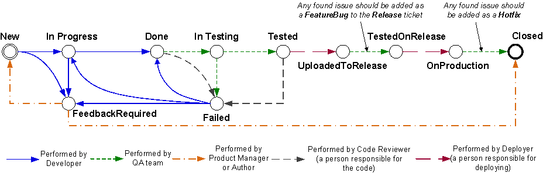
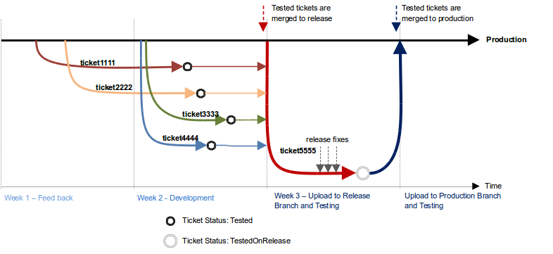

От задачи до production
или "Как мы ведем разработку"
Andrey F. Kupreychik @ Bitworks
Инструменты, инфраструктура

- Jenkins
- git + gitolite
- redmine
От задачи до production

***

Задачи и GIT

Тысяча и одно окружение

А для apache это просто:
## ticket1214.test.project.com
ServerName test.project.com
ServerAlias *.test.project.com
VirtualDocumentRoot /var/www/vhosts/%-4.0/public_html
Code-review и unit-тестирование
Ручные тесты и автотестирование
Сборка релизов
Заливка в прод
Облегчаем свою жизнь
- Любая задача подчиняется процессу, абсолютно любая!
- Изменения в БД только через миграции.
- Соблюдайте принципы, бейтесь за архитектуру.
- Код не понятен - код-ревью не пройден.
- Писать тесты - полезный навык
Немного фактов
- Счетчик тикетов в редмайне скоро отсчитает 30000 тикетов
- У нас бывает до 50 разрабатываемых/тестируемых фич одновременно
- За последние 3 года мы откатили с production только один релиз
- Ведущие разработчики знают до 90% классов в проекте как свои 5 пальцев